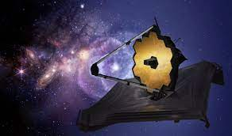

James Webb Space Telescope

The James Webb Space telescope was a huge leap forward for the possible research that can be done in deep space. Webb has made so much more preogress in STEM possible due to the new potential for deep space research. The James Webb Space Telescope is shown bellow.